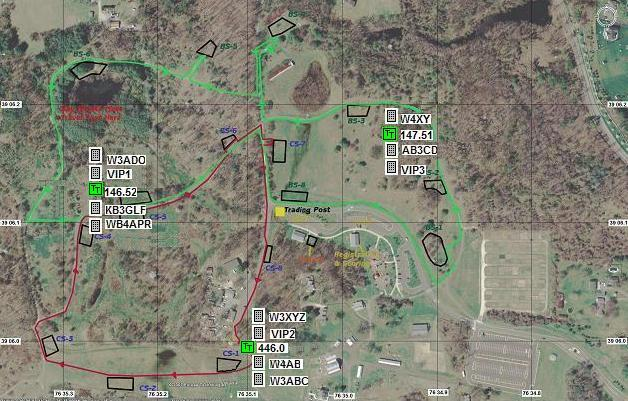
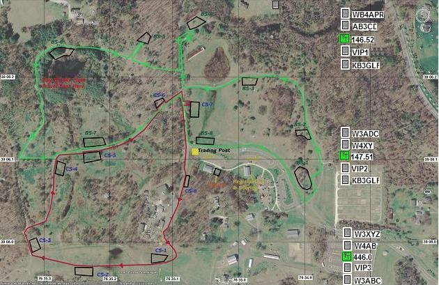
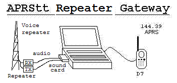
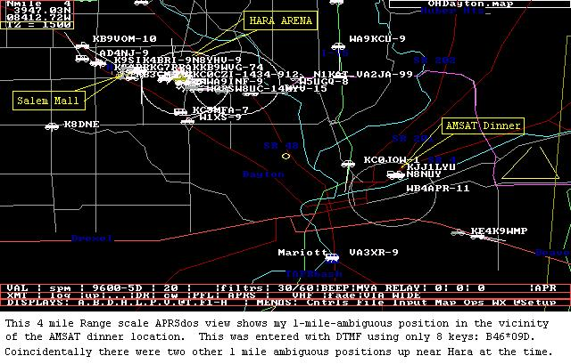
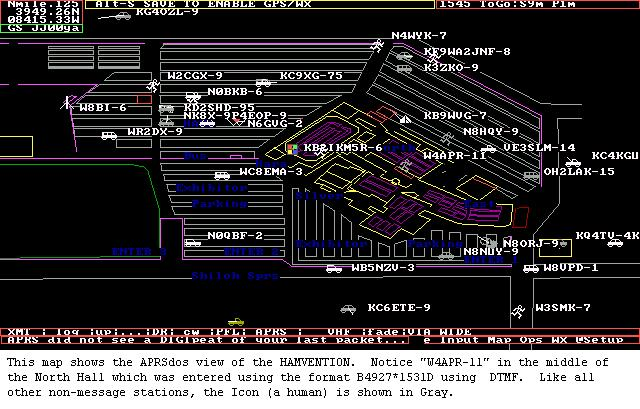

APRStt Satellite to be launched! The PSAT2 satellite is scheduled for launch this june (2019) and will be the first APRStt satellite. It will allow users with nothing more than a DTMF handheld to report their position anyhwere on earth via Touchtone. The satellite responds by voice and by converting the data to an APRS packet downlink too.
APRStt Frequency Announcements: New as of Nov 2015 is a modification of the APRStt flying on the satellite to use it terrestrially as well. This arrangement is called the APRStt Frequency Announcer. Here is what it does if set up on a local simplex frequency such as 146.58 so that anyone with any radio with a TT keypad can use:
With APRStt, not just the 5% of hams who have APRS radios can communicate, but now anyone with any radio and a DTMF keypad can join the global APRS and VOIP radio system. He can store any of his favorite 2 digit repeater ID's in his DTMF memories for instant access.
Change in DTMF Callsign Format: As of Spring 2015, (and now in draft as APRStt3.01 spec, due to the design for the APRStt satellite PSAT2 we have a better callsign format that only takes 10 keys instead of 12. This is much more of an improvement than just 20%, since it allows now a full callsign AND four digit data field all in a single DTMF burst from DTMF memory. Until this filters down through all the historical APRStt documents, you can find this new format on the PSAT2 web page. Basically it is just the 6 keys of the callsign followed by a 4 digit code that tells the position of each of those 6 letters on the DTMF keys. To calculate the number see the PSAT2 link or use the online calculator. Similarly, a 3 letter suffix can be encoded in just 5 keys which makes a perfect match to the 5 digit ANI built into some radios. We are trying to build a table of DTMF radio capabilities. Please send in info on your type radio.
CHANGE IN DTMF Position Format: As of August 2013, we have reversed the DTMF format sequence from XX...YY... to YY...XX... to keep APRStt DTMF consistent wtih all the rest of APRS/GPS since we always speak in the sequence of "LAT/LONG" and so we should indicate YY.. before XX... It may take a while for all this to filter down through all the old docs. But this is now the standard. No maps have to change, only the docs on the DTMF formats.
See the Draft APRS3.01 spec (.doc).
See the state of the Byonics APRStt implementaion as of 2013 (.doc)
See the Implementation notes of WB2OSZ
Use the Callsign DTMF encoder by Bob Wood, WA7MXZ
See the APRStt Spec 2.50 and implementation details.
or previous version 2.41.
See the APRStt User Guide version 2.3.
See the APRStt Planning for the Boy Scout 2013 Jamboree
APRStt is an engine at an event that listens for DTMF data entered by anyone using any HT with a keypad and converts it over to the APRS data channel for distribution to all APRS systems and viewers as shown in the sketch above.
Projects in Work: APRStt is just part of the overall Ham Radio Initiative for Universal Contact by-callsign. It is appropriate for ANY ham radio system that receives input from users via DTMF such as repeaters and VOIP applications. APRStt specific aps are being developed by Byonics as an add-on board to his TT4 (shown below) and by KA2UPW called APRSspeak, and John Langner WB2OSZ is working on a speaking version as well. In 2011, WB6NIL, Jim Dixon, author of the AllStar VOIP Repeater system was experimenting with accepting APRStt userd DTMF Callsigns on his inputs. This allows his users to indicate their presence to the global APRS community. And hopefully, Echolink is also considering it.
APRStt4: This is the Tiny Track TT4 with the add-on DTMF daughter board making a complete stand alone special event APRStt engine. We have used this for two marathons so far and it works great. Juse one of these at the event can translate all DTMF user reports over to the APRS channel so that all can see everything on APRS.
APRS DTMF Marathon: The map above right is how we used APRStt at a local Marathon to allow anyone with any HT to report their location into the APRS tactical picture. First, a grid was added to the Marathon Map (shown here) allowing position reporting using only 2 digits of X and Y to report anywhere on the map using the DTMF format of B2YYXX*.... Further the exact locations of each mile mark were entered into a table and then a simpler B9MM* format could be used to report position by milemark. Either DTMF format was OK.
Byonics TT-4 add-on DTMF adapter: Shown above is the Byonics DTMF adapter added to a TinyTrack4 which does all of the conversion from DTMF and generates a resulting APRS formatted packet for transmission by any FM radio. The Dayton 2013 version works fine for the B1YX* and the B2YYXX* position formats, but until Byonics implements the Mile Mark B9mm* format translation procedure, I added a small BS2 chip processor (dead bug style) and used it to parse the packet from the TT4, do the mile-mark conversion and then output the resulting string in digital format to the TNC in a D700 radio. The DTMF radio also generates a CW ack to the DTMF user on the 146.58 input to let him know his DTMF codes were received correctly. For my CPU version, only one radio was needed (the D700) to receive the DTMF reports on 146.58 MHz and then do the conversions and then transmit the packet into APRS using the other side of the radio. For normal APRStt4 using the Byonics TT4 and DTMF card, no other TNC is needed, just two analog radios. You cannot use a single dual band radio for this function since the D700 dual band radios cannot be both operated at the same time from the Speaker/Mic or back panel audio connections simultaneously. You can use one dual band but wihtout separate PTT, you have to give up the CW ACK transmitted back on the DTMF channel. For the Marathon with milemarks and one radio, see the photo of the box placed in the woods on a hill to cover the event.
Simplest APRStt - CALLSIGN only: In its simplest form, APRStt lets anyone with a DTMF memory in his HT or mobile check-in to the global APRS system without needing a special APRS radio. For example, the callsign WB4APR in DTMF is spelled as 9A2B42A7A7C. That one callsign-burst sent from a DTMF memory is received by the APRStt receiver and converted into the APRS system with all of the following important information:
Callsign Presence (someone is on the air), is most of what APRS is used for anyway, and with DTMF, it can be done from any HT or mobile radio. This is part of the overall move towards Universal Text and Voice connectivity-by-callsign Initiative. The idea is that anyone on any system, using any device can contact any other ham anywhere, on any system, using any device by callsign alone. The APRS-IS provides the presence by callsign as to who is on the air, where, on what system, and how he can be contacted. APRS already does the Universal Text portion of this project and the Automatic Voice Relay System (AVRS) for voice. Notice that no manual data entry is required from the user other than initiating his DTMF callsign memory. Use K3PO's Callsign Translator to calculate your DTMF callsign.
Programming your DTMF Memory: Here is how to program your DTMF callsign into some specific radios:
APRStt at Dayton 2010: Doug Quagliana KA2UPW demonstrated APRStt at Dayton 2010 with his program called APRS-Speak. Hams could keep track of their buddies and appear on all APRS displays by sending their 2 digit position from the handheld map shown below using the B1YX* format followed by their callsign from DTMF memory. They could also transmit their monitoring FREQUENCY using the format CFFFFFF* which is the frequency in KHz. This would place them anywhere at the Hamvention to the nearest 120 feet or so.
Print two map copies per page (or reduce to 75% on copier and get 4 per sheet)
TWO-DIGIT Coordinates at Dayton: You can also position yourself anywhere within 60 miles in the dayton area with the 2-digit DTMF position format B2YYXX* format. In this case the XX and YY are the minutes of LAT lONG as in 34YY North and 84XX West. You can also locate yourself using the simple sketch map in the Dayton Hamvention Boolket as shown here. Notice the AA and YY grid on the edges. YY is vertical Latitude and XX is horizontal Longitude.
HISTORY: We first demonstrated the APRStt concept back in 2001 at Dayton using hardware DTMF decoders and a parallel port voice synthesizer, and a French team made a demo windows version around 2006 and then Rick Ruhl W4PC of CSS implemented a version for 2009 using soundcards that he called Radio Spotter. It would run on a PC with nothing but a dual band radio (or pair of radios) to establishe a local APRStt zone where any nearby HT that ID's itself by DTMF memory will be converted to APRS at that location. or they can enter their position data too. In 2010 KA2UPW demonstrated the above implementation and Byonics began a hardware version by adding a DTMF decoder chip to a TinyTrack-4 as a stand-alone APRStt engine.. This hardware version is showning great promise in testing in 2013 for an upcoming Marathon!
This map above shows the view of the Hamvention area on Sunday 2009. This is from FINDU.COM but it uses the original APRSdos map so you can see the booths inside the building. You can see the APRStt users along the left edge that have transmitted their callsigns but not yet their detail position. APRStt puts these calls in an unused area of the local map so they can at least be seen in the area. Those that enter the additional B1yx* detail position from the grid map can be seen elsewhere on the map. I see two. The actual position of the APRStt engine runnning Radio Spotter is in the center underneath the W4PC symbol. Zooming in once more reveals it. APRStt assigns a -12 SSID to all APRStt users when they are gated from DTMF to APRS. This view does not even include the surrounding parking lots, and hotels. It was reported that there were over 300 APRS stations in Dayton as of Saturday morning and counting.
APRStt BACKGROUND:
APRStt, (APRS Touch-Tone(tm)) is an APRS protocol for a two-way DTMF-to-APRS gateway to permit the other 95% of ham radio operators with voice-only radios to exchange information and data with the APRS system and users. Not only can they "check-in" or send any APRS data from their DTMF keypad, but they can also monitor the APRStt voice output channel for all the voice responses which speak APRS information back to these voice users. They can also query any information and receive voice response. This is just another part of the Global/Local Ham Radio Text Messaging/Contact Initiative. .
APRStt allows all ham radio operators to participate in the APRS information system, not just those with the specialized APRS radios (D7, D700, D710, VX8R, HAMHUD, etc) or those with TNC's and mobile laptops. With APRStt, anyone can enter information, Let everyone know their operting frequency or show up on the local map and hear what is going on. To help us understand the baseline of existing DTMF capability See the DTMF radio capabilities list.
THINKING OUTSIDE THE APRS TRACKING BOX:
Everyone has heard me say over and over that APRS is not a tracking system, but is a common local/global information exchange and distribution system for tactical and real time data of immediate communincations support value to users. To appreciate the potential of APRStt, you have got to forget about APRS as a tracking system, and think about what kinds of simple digital data can be exchanged in support of an event or local activity. Here are several DATA items that can easily be sent by DTMF::

APRStt ON THE MAP: On receipt of nothing but an APRStt user's DTMF callsign, the station will immediately appear in the APRS system on the map in LIST format near the location of the APRStt gate. On the APRS map above, not only do you see all of the usual APRS operators (about a 32 mile wide map between Washington DC on the left, and Annapolis to the right), but in the lower right, you also see the 147.105 "local travelers repeater" along with the DTMF users on that repeater. All DTMF users (with the -12 SSID) show on the map as a LIST in the vicinity of the APRStt gateway or repeater where they were last heard.
Additional Position reporting formats are available to give approximate and even precise positions. Positions can be reported by Mile mark, or Station number or checkpoint at events. Any numbering system can be incorporated. At Dayton, position reporting by simply entering the BOOTH or Flea Market number are possible. See
VOICED INFORMATION: Even without using DTMF or inputing any data, anyone can tune into the APRStt voice channel and hear unsolicited information of local significance. Positions are reported as a direction and range from a reference point (usually the APRStt engine). For example "WB4APR is 4.5 miles northeast". Of course APRStt users can change the reference point by DTMF command such as "from the repeater" or "from downtown" or "from FINISH", etc. For example, here are some of the unsolicited reports that were implemented in APRStt1.0 back in 2001:
APRStt TYPICAL APPLICATIONS: There are several primary uses of this APRStt application and in many cases, mopst of the needed data can be preloaded in to DTMF memories in advance such as the callsign or frequently used positions or repeater frequency. So with just as little as one or two DTMF memory replays, the DTMF user can send his data to APRS and be seen around the world in the vicinity of that APRStt in real time. Here are some examples.

RECEIVING APRS on TH-78 and FT-51R RADIOS: Both the Kenwood TH-78 and Yaesu FT-51R radios
back in the 1990's had a message TX/RX capablity using DTMF. The APRStt engine can be
configured to transmit
local APRS information similar to the above onto the front panel of these radios too. Please see
the HT51/78 project
APRStt BACKGROUND: APRStt was initially introduced at the RAC convention in 2001 and subsequently at Dayton in 2001. By the next year, Voice response had been added. This system demonstrated the ability to let not just the 5% of ham radio operators with APRS, but now 100% of all mobiles and HT's or traveling operators out of their local area to be identified from anywhere in the world when they are operational. Since Kenwood introduced global APRS text-messaging and email into their APRS HT in 1998, APRStt was developed to include the other 95% of ham radio operators by acting as a gateway between their existing DTMF HT's and the rest of the APRS community.
KATRINA FREQUENCY INCENTIVE: After Katrina, APRS responded to the ARRL initiative to make sure that every ham radio operator in a disaster area can be located by his frequency. This initiative was called the Automatic Frequency Reporting System AFRS. At that time, the Voice FREQUENCY field was added into the APRS system so that we could find the voice contact frequency for all APRS operators. In addition, not only could APRS users report their operating frequency, but also the wide area Voice repeaters used by travelers could beacon their frequency onto the front panel of all APRS radios. See the LOCALINFO Initiative. In response to that initiative, Kenwood developed the D710 mobile radio that not only automatically includes the operators present voice operating frequency in every position report, but also can tune to any other APRS operators frequency or travelers repeater with just the push of the TUNE button.
The combination of the original APRS, the addition of Frequency in AFRS, the use of Repeater Frequency Objects, and APRStt, gives a univeral, global, system for identification and localization of all radio amateurs by only their callsign. Any station in the world can be located (or contacted live) through any of the live RF APRS application programs or on the web by any of the WEB based APRS systesm such as FINDU.COM as shown below:
APRStt VOICE RESPONSE: The feedback from APRStt to DTMF users is all by synthesized voice. The APRStt acknowledges a properly decoded DTMF checkin with "Welcome CCCC". APRS messages to a DTMF user are spoken. APRS positions when spoken over APRStt are always spoken as a DIRECTION and DISTANCE from a local REFERENCE. By defualt, the local reference is the location of the APRStt engine itself, but this reference can be changed by the DTMF user to any other APRS location in the system. DIRECTION is spoken as the 16 cardinal points of the compass as in North, NorthNortheast, Northeast, EastNorthEast, East, etc. This verbal positioning lets everyone in the club or at an event participate in the exchange of APRS data, not just those with the APRS radios. Even the old codger that shows up with his venerable 20 year old HT can participate!
APRStt SIMPLEX: It is suggested that an APRStt gateway should monitor the national simplex frequency of 146.58 in the USA for anyone that wants to check in by DTMF. If that channel is already "claimed" by some other application, then the other possible frequencies that are compatible with both the National ARRL and the 20 KHz plans are 146.46, 156.58, 147.42, 147.48, 147.54. But it would be nice to use a common frequency where possible (146.58) for travelers.
Other APRStt: Any other system that has DTMF users can also be used as an APRStt input device. For example some repeater controllers, EchoLink, and IRLP nodes, and any other ham radio applications that receive DTMF to accept the DTMF callsign burst and generate the APRS data for transmission over to the APRS network. But even if we dont get controller manufacturers to add this to their products, we can probably add a DTMF chip to any of the small APRS PIC devices such as the Micro-Track or Opentrackers and design them to be DTMF ==> APRS gateways. See BYONICS.COM booth this year at Dayton! They can be either stand-alone devices on any frequency or easily added onto older non-programmable repeater controllers:
The DTMF chip plus a Microtrack could simply connect to the repeater RX audio and to an easy whip antenna as shown above. Done.
Or for special events, or simplex nets, or any place you want to make it easy for non-APRS voice users to be visible to APRS, a simple Opentracker+ with a DTMF chip could go on a dongle and be attached to any HT making that HT be an APRStt gateway for everyone else at that event as shown below.
Or for marathons or any large mass movement of ham radio operators, imagine if you placed one of these automomous APRStt Gateways at every checkpoint along the Marathon route. As Hams moved about the event, if ever they changed locations from one area to another, all they had to do was send their DTMF callsign memory, then the APRS event map would know approximately where they were and/or what frequency they were monitoring.. The APRS symbol for a DTMF user is a gray DTMF keypad. But for future expansion, it can have up to 36 overlay characters for special applications. The APRS symbol for an APRStt gateway is a green square with "TT" in the middle of it.

Field Data Entry: Since these same DTMF radio users can also enter small text messages, they can also be used for entering data from checkpoints or other field applications. See how to use an APRS HT for field-data entry
Or lets say for an event which has maybe 6 operating frequencies, repeaters, simplex channels or whatever. Users just send their monitoring frequency on the APRStt input channel, and they appear on the map as a LIST by that frequency as shown below:

In the above view, the "location" of each APRStt receiver is given a completely arbitrary position so that it shows up conveniently in an out of way place on the APRS event map. Clustered around it are the DTMF callsigns that have checked in (by DTMF) on that particular frequency.
 APRStt will revolutionize ham radio because it lets 100% of ham radio users "check-in" to the global APRS system to facilitate end-to-end contact between operators. APRS users have been doing this since 1995 or so, but now the other 95% of ham radio operators can participate. The simplest form of APRStt is each user putting his DTMF callsign into a DTMF memory in his radio. If there is an APRStt engine monitoring his favorite repeater, then all he has to do to appear on APRS is to send his DTMF memory! He will appear on the global APRS system as an object within ambiguity range of that voice repeater and showing that frequency! See how important voice frequency is to APRS. The image to the right is the roll-your-own way to do it if it is not implemented in the controller or the VOIP software.
APRStt responds! On hearing the DTMF callsign and sending out the position and frequency packet on the APRS channel, the more advanced APRStt implementations will respond by voice with "Welcome W3XYZ!" as confirmation. This is really no different than what mobiles do now "WB4APR LIstening", except that using the DTMF method is machine readable and allows this presence to the global ham radio community via APRS instead of falling on deaf ears.
APRStt two-way: Now then, these same more sophisticated APRStt systems can also watch the APRS system for any messages addressed to you. Hearing any, they will SPEAK them back to you on the voice channel! The specialized full two-way APRStt Engine can be as simple as a laptop at any repeater site or located in the valley at a home station as shown below.

APRStt will revolutionize how you do special events! Everyone with any HT at any event will be able to keep the overall APRS map and communications picture updated with their position, status and other needed data! Now the Kenwood APRS HT's and Mobiles will have someone to talk with! As long as there is an APRStt gateway nearby, DTMF users can send POSITS, MESSAGES, EMAIL and Queries with their TTone pads and hear VOICE responses (on the APRStt channel). APRStt was demonstrated during Dayton in May and the RAC convention in Vernon B.C. in July 2002.
For field events, the APRStt Engine can be as simple as a laptop and two HT's supporting a special event or field activity as shown to the right. Once this suite is activated at an event, it lets EVERYONE listen to APRS information and input APRS information using any two way radio (usually on a dedicated simplex channel).
APRStt is the gateway for DTMF voice users to report themselves to the global APRS community of users. It enables all non-APRS HT's and Mobile radios to be located and this information is fundamental to facilitating ham radio communications. See some examples:
Not just DTMF and Voice: Some radios already have paging, and DTMF texting send and receive. These radios can take advantage of APRStt by integrating them into the APRS system.
APRStt IS LOCAL: Whether implemented on a repeater, a VOIP node or a simplex frequency, APRStt is simply local, yet transparently integrated with the local and global APRS system. More sophisticated users can take advantage of some of the clever system of abbreviations and short cuts so that positions, messages and many other things can be entered with only a few key strokes. As in the examples above, just sending a callsign is enough to put put you on the global map with a position in the vicinity of the local APRStt repeater or node.
The remainder of this page is the full original APRStt details that would probably only be used for special applicaitons needing more than the basic CALLSIGN identification noted above. But it does show the potential of using our HT keypads like modern teen agers do with their text-messaging from their cell phones!
For special applications needing better position reporting, a fully precise position can be entered with only 6 digits, because the APRStt signal is only on local RF simplex range of the APRStt engine. This establishes the LAT/LONG significant digits and only the lower 6 precise YYYXXX digits are needed to nail down your exact position. For example, YYYXXX is equivalent to DDMy.yyN/DDDMx.xxW because the DDM and DDDM are already known in that area. For fixed events that have known checkpoints or locations, or mile marks, then just a 3 digit position is possible! The DTMF string ABB becomes the BBth position in the A table. For a marathon, simply "013" could put you on the map at mile mark 13. etc. So think outside the box. this is not just using DTMF to enter a LAT/LONG, not at all. This is a system designed from the ground up to serve a specific purpose at the local event or area and to make it SIMPLE for the end user with only DTMF to enter meaningful data.
TT-KEYPAD: We can make this as all inclusive as we want. In addition to the simple
examples above we can do ANYTHING in APRS with DTMF with enough patience.
Don't let the numbers in the below example fool you. You dont have
to remember these. Just type the letters on the DTMF like any text-messaging teenager.
For example type "APR" on
your DTMF pad and the resulting DTMF tones are 27A777 which is matched to WB4APR in the APRStt
callsign table. If there is a conflict then fully spell it using normal text messaging
techniques and it is WBB04AP-RRR which is 9220427A777 and is a precise match..
EXAMPLE 1. DTMF to Packet Conversions:
A922444427A77*82#. becomes:WB4APR>APDT,WIDE:/030415z385 . N/0762 . Wv <== A van in the vicinity
In the first case, the CALL, ICON and any comments are included and the position is posted
as a 10 mile ambiguous position in the vicinity of the APRStt system. Subsequent TTone
entries can refine the position without having to re-enter the call. In the second
exmaple, the four digit LAT/LONG places me at an exact location inside the Dayton Arena.
The third example is an Email sent to address book #2 (for that user). In the
forth case C92111278* indicates a message to WA1APT. The "2775*52"
decodes to ARRL#52 which explodes to the text shown. (ARRL RadioGram)...
B4927*1531#...............becomes:WB4APR>APDT,WIDE:/030425z3949.27N/08415.31W <== Exact position in the APRS booth!
C3*20480602803333# becomes:WB4APR>APDT,WIDE::EMAIL :bruninga@maile.earthlink.net Get me at 3.
C92111278*2775*52# becomes:
WB4APR>APDT::WA1APT :Really enjoyed being with you. Looking forward to getting together again.
EXAMPLE 2. VOICE responses to simple DTMF Queries:
QND..............................QUERY for the nearest DIGI to me: "AA3JY is NORTHWEST 3.5 MILES"
QNM.............................Query for the nearest MOBILE to me: "K3FOR is SOUTHEAST 15 MILES"
QRD*0924277#...........Query for WB4APR relative to downtown: "WB4APR is NORTHWEST 9.3 MILES FROM DOWNTOWN"
EXAMPLE 3. Automatic Voice tracking of SPECIAL objects. In this case, the main tracker or station or object at an event can be designated as special and then APRStt is placed in SPECIAL TRACKER Mode. It will VOICE report the location of the SPECIAL packets whenever they come in. Positions are reported as direction and distance to known reference points.
EXAMPLE 4. APRSTT can voice announce satelites in view! Since APRSdata is already putting out an APRS object on 144.39 whenever an active AMSAT is in view, by using the command ACTIVATE AMSATS (AA), APRStt can be told to VOICE report these satellites whenever any are in view...
NEW: To help very small CUBESAT satellites support an APRS mission, we have added a simple SPACE subset to the APRStt specification to make it easy for HT's to send APRS data via these small satellites using only DTMF tones! See SPACE-APRStt . Thus, ANY radio can send APRS data just like the Kenwoods! (with NOTHING attached) See the APRStt User Guide for how to spell things on a DTMF keypad.
To date, the only radio-only APRS signalling method has been the Kenwood D7 and D700 radios with their internal TNC's. But even so, the user interface is still only the HT's ubiquitous TTone keypad. APRStt simply moves the TT-to-APRS conversion from a TNC in the HT, to a PC on the hill so that ANY existing radio can be used instead of requiring a Processor and TNC to be built into every radio! Further, the DTMF users can receive feedback data via the text-to-speech (or CW) process built into APRStt.
HISTORICAL STUFF From original 2001 Introduction of APRStt: APRStt was originally written for a DOS PC with a DTMF decoder chip and resistor D/A string on the LPT parallel port of a PC. This was intended to inspire someone with Windows skills to write an all-software version using a sound card and no unique hardware. Click here for the original (2004) APRStt SPEC. and all of my detail implementation notes. or here for an original (2004) simplified version.
You can even download the original APRSdos version (obsolete). DOWNLOAD APRStt01.zip. (Ignore any previous copies such as 04) With this progarm you could begin playing with APRStt on your own and see how it works. Even if you dont build the DTMF hardware interface, this program will let you enter DTMF equivalents on your keyboard to see how the conversions work over on the APRS side. I recommend that you run it on a Laptop with a D7 on low power and then watch what your Base-Station APRS system does with the packets.
DTMF INTERFACE: The original APRStt.exe worked with a simple $5 DTMF decoder chip on the LPT1 Printer port and runs on any old DOS PC (eventually to be located at your voice repeater site (or other "receive" site (maybe 147.555?))). It performs the TTone to APRS conversion for all DTMF users in the area and sends the packets via its own TNC to the APRS system.
VOICE INTERFACE: The original APRStt.exe does NOT need a sound card. It speaks through 8 resistors on the LPT1 port so ANY old PC or laptop can be used... You can even record your own voice for the responses..
HT DTMF MEMORIES: The APRStt format definitions combined with the TTone memories built-in to most radios allows for nominal APRS operations with only a few key strokes. In fact, the number of key strokes can actually be less than for entering the same message via the keyboard on a Kenwood APRS radio! This is because APRStt uses a heuristic approach to abbreviate most commands...
The following APRSdos map of Dayton shows me in the vicinity of the AMSAT Dinner using only the DTMF entry of B47*09. Notice my call within a 1 mile ambiguity circle down where the Amber Rose restaurant is located (and near those APRS mobiles parked in its parking lot!).

The next Dayton map shows me (W4APR-11) located inside the HARA arena at the location of the APRS booth in the North Hall. This position is exact because I used the APRStt exact format of B4927*1531D.

HOW did I know my LAT/LONG? Easy!. Before Dayton, I copied the MAPS out of the Hamvention Program and added some simple LAT/LONG tick marks along the edges of the map. With one of these in my pocket, I could use DTMF and the 2x2 format to put myself anywhere on the map within 30 miles of the center location of the APRStt recevier. Or using the HAMVENTION map and the 4x4 APRStt format, I could put myself anywhere exactly. Here is the overall Dayton paper map from the brochure with the one-mile grid tick-marks.

Every event has a MAP. Simply put the LAT/LONG minutes on the edges!
LINUX IMPLEMENTATION: When it comes to writing the final APRStt software, it would be great if a version was written under LINUX and could then be run as an auxilliary application at your local IRLP node! Rick, KB8DNR suggested that since the Linux box is already up there, already listening for DTMF, and with my other AVRS ideas will also already be linked to 144.39 via its own TNC, then its a perfect software only upgrade!
APRStt-PL is an addon option [not even started yet] that adds "PL" decoding capability to APRStt. It not only listens for APRS messages formatted via Touch Tones and converts them to APRS packets on 144.39, but it also listens for PL tones on the input of the repeater. Thus, users can enable different PL tones on their HT's to signal any of 38 different states, commands, or pre-arranged controls. APRStt converts these also to packets of the form:
This packet shows that a PL tone of 103 was heard on the W3VPR repeater APRStt program. The applications for this kind of signalling are only bound by the imagniation of the users. Since APRS knows where W3VPR repeater is located, it can use Vicinity Plotting to let you see where this is occuring. Or I can write a program that rings a bell when PL 147 is heard. My kids can then enter a PL of 147 on their $88 Alinco HT when they want to alert me to QSY to the W3VPR repeater to talk them. ETC... See the details on this PL addition.
DUAL TONE TEXT PAGING RADIOS: DTMF Paging Radios: This is another APRStt project. There are 300,000 DTMF text paging walkie talkies that were produced in the 1990's. We want to integrate them into the APRS system too. In Mar 09, I made some progress on a pic-processor APRS-to DTMF gateway to convert APRS packets to DTMF Text packets that can be displayed on any of the hundreds of thousands of old DTMF text messaging radios of the 1990's (TH-78 and FT-51's etc) Read about the gateway.
Before the entry of the Kenwood D7 into the market, several
manufacturers had experimented with using Touch Tone Dual Tone Signalling
transmission and display in their handhelds. Several models of Handhelds
can send AND receive short TEXT fields via Touch Tones:
These radios can not only send TTones like any other HT, but they can also display text sent via TTones from other radios. The displays are quite limited to 6 or 8 characters on the screen at a time, but up to 10 such words can be sent. For APRStt then, we can then define how APRStt can take APRS messages sent to one of these users, convert it to DTSS tones and send them the message over the repeater! CLick here for details.
APRStt.exe is written for any old 25 MHz or so DOS PC. It was demonstrated at Dayton 2002 using only CW responses. See Details, but I have since added VOICE response via 8 simple resistors on the parallel LPT1 port. For Dayton, I released APRStt00.exe so that even without the DTMF chip, experimenters could enter DTMF simulations from its PC keyboard and see the effect of the packets it generates on the APRS channel...
Click here for a copy of how I added the DTMF chip to the LPT1 parallel port on my PC.
Back To APRS main page |
Site Map |
You are visitor number:
Since 28 March 2002. Number was 3900 on 6 June 2004..
The Naval Academy is a registered user of APRS and WinAPRS. The purpose of this web page is to show several applications currently in use at this site and should not be considered as an advertisement or an endorsement of any commercial product.
{kind=link}
{kind=link}
{kind=link}
{kind=link}
{kind=link}